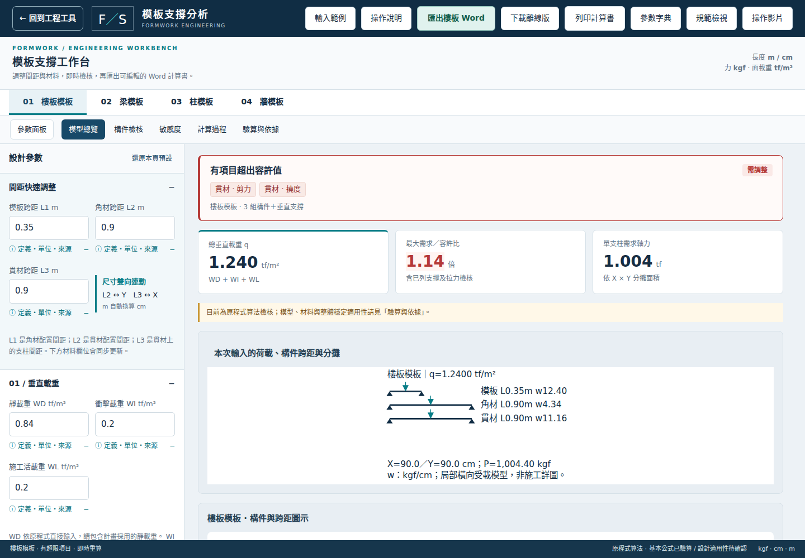
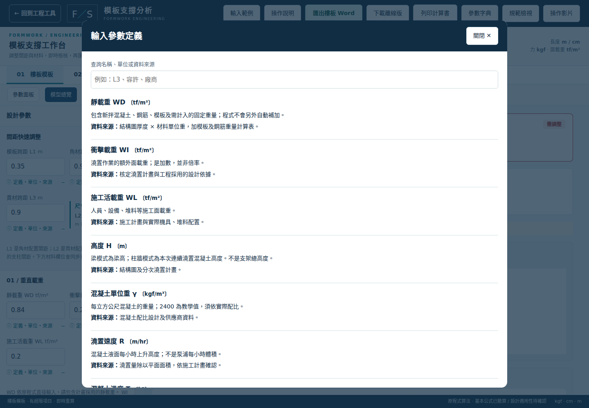
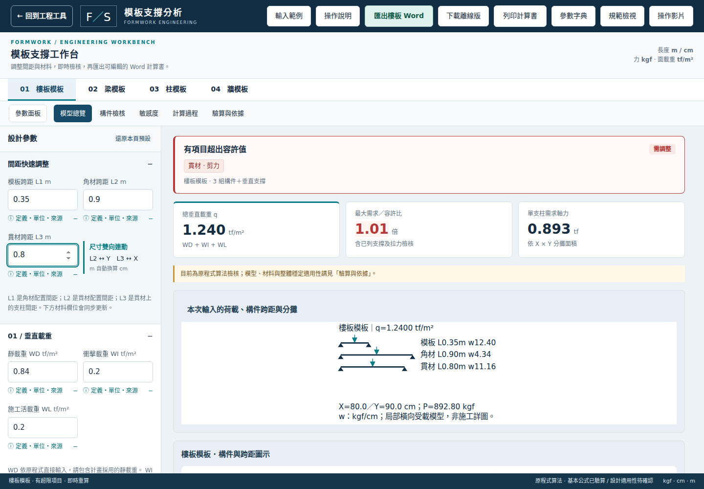
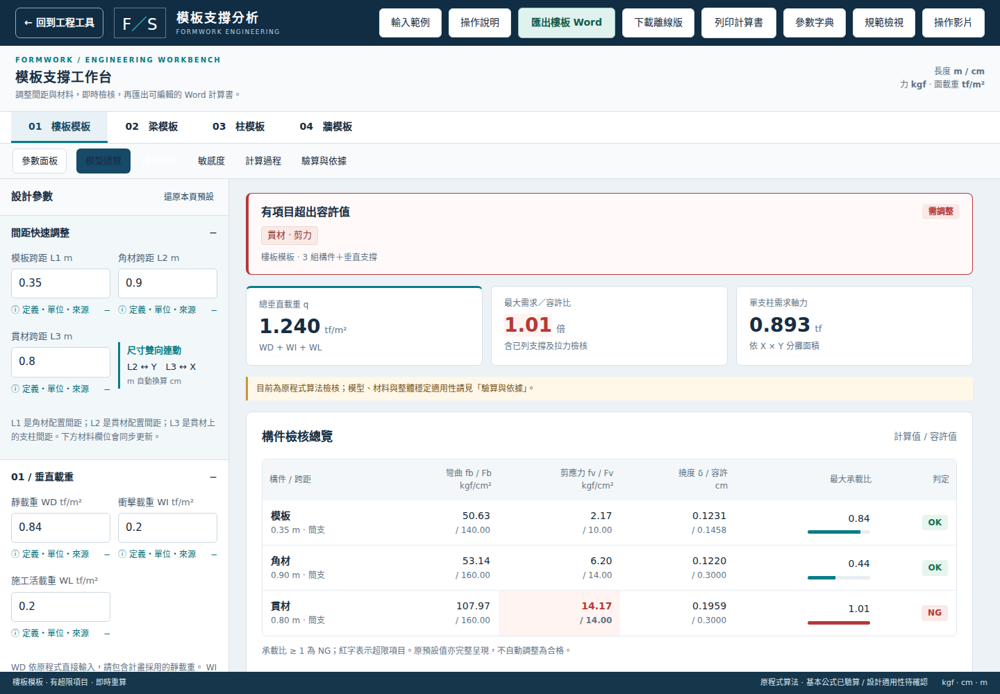
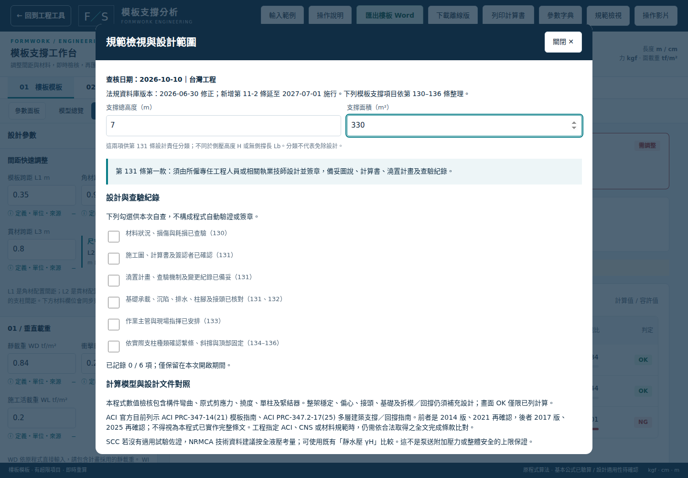
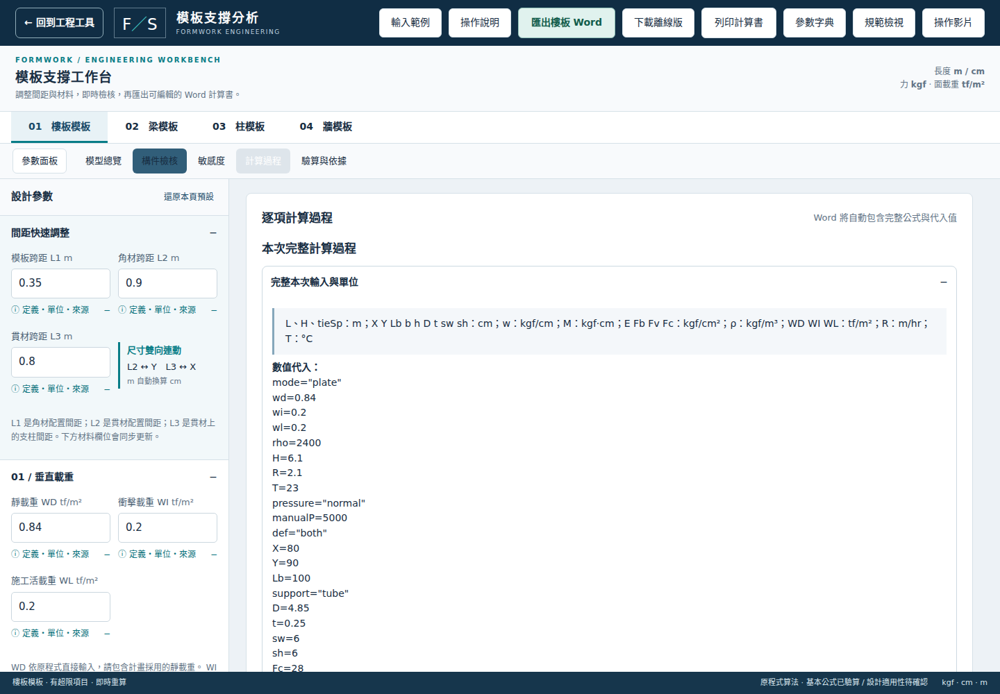

FORMWORK WORKBENCH / 操作教學 01 / 06
選擇分析類型

選模式 → 輸入範例
四種構件，各自保存參數
教學值需換成工程資料
先選擇樓板、梁、柱或牆。
第一次使用，按輸入範例，載入對應案例。
範例是教學假設，不能直接當作工地設計值。
FORMWORK WORKBENCH / 操作教學 02 / 06
填寫載重與材料

定義 + 單位 + 資料來源
跨距 m；斷面 cm
E、Fb、Fv：kgf/cm²
依設計圖、澆置計畫和材料資料填寫參數。
每個欄位下方都有定義與資料來源。
注意，跨距用公尺，斷面尺寸用公分；衝擊載重是加數，不是倍率。
FORMWORK WORKBENCH / 操作教學 03 / 06
間距雙向連動

L3 = 0.8 m → X = 80 cm
L2 × 100 = Y
修改任一端，另一端同步
以樓板為例，L一是角材間距，L二是貫材間距，L三是支柱間距。
將 L三改為零點八公尺，支撐分攤寬 X會同步變為八十公分。
L二則與 Y連動。
FORMWORK WORKBENCH / 操作教學 04 / 06
閱讀檢核結果

檢查每個 NG 項目
彎曲・剪應力・撓度
敏感度不改原始設計
切換構件檢核，逐項查看彎曲、剪應力與撓度。
紅色 NG代表超限，應查明原因再調整。
敏感度只提供獨立試算，不會改動原輸入；也不能只調到顯示 OK就認定安全。
FORMWORK WORKBENCH / 操作教學 05 / 06
查詢規範與適用範圍

高度 ≥ 7 m 且面積 ≥ 330 m²
查看第 131 條分類
整體穩定須另行設計
開啟規範檢視，輸入支撐總高度及面積，查看設計責任分類。
這裡的高度，不是混凝土澆置高度。
逐項確認圖說、澆置、基礎與現場查驗；整架穩定仍需另行設計。
FORMWORK WORKBENCH / 操作教學 06 / 06
匯出與手機操作

核對 → 匯出 Word
手機底部切換工作區
隨時重看影片與字典
確認輸入及計算過程後，按匯出 Word，保存計算書。
手機可使用底部按鈕切換參數與结果。
操作影片、參數字典和規範檢視，隨時都能從上方開啟。